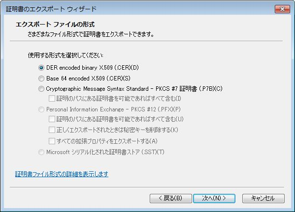

OpenSSLやPKI周りを調べていると、拡張子が色々出てきて混乱したので整理しました。
特にX509証明書関連については、以下のWikiページを参考にしています。
- X.509 - Wikipedia, the free encyclopedia
- PKCS - Wikipedia, the free encyclopedia
頻出拡張子の整理
- .pem(PEM, Privacy Enhanced Mail)
-
Base64符号化を使ったデータフォーマット。データのenvelopeとしてのフォーマットであり、データの中身は特に問わない。そのため証明書や鍵データ等幅広く使われている。OpenSSLでもサポートされており、様々なオブジェクトデータで"-inform", "-outform"オプションに指定可能。
元々E-Mailの暗号化や認証システムとしてRFC 1421 - 1424で提案されており、フォーマットはその中に包含されていた。フォーマットについては広く使われるようになったが、暗号化や認証システムについてはPKIに取って代わられたようだ。
- Privacy-enhanced Electronic Mail - Wikipedia, the free encyclopedia
- RFC 1421 - Privacy Enhancement for Internet Electronic Mail: Part I: Message Encryption and Authentication Procedures
- .der(DER, Distinguished Encoding Rules)
-
バイナリ形式のデータ形式で、OpenSSLでもサポートされている。
元を辿ればASN.1 (Abstract Syntax Notation One) という抽象構文を表現するためのフォーマットの一つ。ASN.1自体はあくまでも抽象構文を表現する表記法(Notation)であり、データ構造の定義を担う。これを実際のバイナリフォーマットとして表現するためのフォーマットの一つがDERであり、他にもBERやCERなどあり、この話題や文脈で"～ER"ときたらほぼ"Encoding Rules"と考えてよいだろう。
乱暴にまとめるとASN.1はC言語の文法を表現するBNF記法に相当し、BER/DER/CERは文法を解析してアセンブラに変換するコンパイラに相当すると考えてよい。
- Abstract Syntax Notation One - Wikipedia, the free encyclopedia
- http://en.wikipedia.org/wiki/ASN.1
- ITU-T のX.680 - X.683 参照
- BER, CER, DERについてはX.690参照
- http://en.wikipedia.org/wiki/ASN.1
- Basic Encoding Rules - Wikipedia, the free encyclopedia
- Distinguished Encoding Rules - Wikipedia, the free encyclopedia
- Abstract Syntax Notation One - Wikipedia, the free encyclopedia
- .crt, .cer
- X509証明書を格納したファイル全般の拡張子。ファイルフォーマットとは関連付いていない。そのため、拡張子が.crtであってもPEM形式なのかDER形式なのかは、内容を確認しないと判断できない。
- .csr(Certificate Signing Request)
-
CA(認証局)に提出する証明書要求データ。ファイルフォーマットと関連付いておらず、PEM形式なのかDER形式なのかは内容を確認しないと判断できない。
- Certificate signing request - Wikipedia, the free encyclopedia
- RFC 2986 - PKCS #10: Certification Request Syntax Specification Version 1.7
- .p7b, .p7c
- PKCS#7 形式の署名されたデータ
- .p12
- PKCS#12 形式の証明書。秘密鍵が格納されている場合もある。
- .pfx
- Microsoftによるデータフォーマット。いくつか問題点が指摘され、改良版としてPKCS#12が策定されたらしい。
PEM形式とDER形式の見分け方
X509証明書を保存したファイルの場合、
-----BEGIN CERTIFICATE-----
で始まり、
-----END CERTIFICATE-----
で終わるテキストファイルであればPEM形式とみてほぼ間違いない。
テキスト形式ではなくバイナリデータであればDER形式の可能性が高いが、X509そのままではなく、PKCS#7形式の可能性もある。
X509そのままの例：
> openssl asn1parse -inform DER < veri_ie_der.cer 0:d=0 hl=4 l=1577 cons: SEQUENCE 4:d=1 hl=4 l=1297 cons: SEQUENCE 8:d=2 hl=2 l= 3 cons: cont [ 0 ] 10:d=3 hl=2 l= 1 prim: INTEGER :02 13:d=2 hl=2 l= 16 prim: INTEGER :641BE820CE020813F32D4D2D95D67E67 31:d=2 hl=2 l= 13 cons: SEQUENCE 33:d=3 hl=2 l= 9 prim: OBJECT :sha1WithRSAEncryption 44:d=3 hl=2 l= 0 prim: NULL 46:d=2 hl=3 l= 202 cons: SEQUENCE 49:d=3 hl=2 l= 11 cons: SET 51:d=4 hl=2 l= 9 cons: SEQUENCE ...
PKCS#7形式の例：
> openssl asn1parse -inform DER < C:\Users\FengJing\Desktop\veri_pkcs7.p7b
0:d=0 hl=4 l=2863 cons: SEQUENCE
4:d=1 hl=2 l= 9 prim: OBJECT :pkcs7-signedData
^^^^^^^^^^^^^^^^^
15:d=1 hl=4 l=2848 cons: cont [ 0 ]
...
ブラウザがエクスポート可能なファイル形式
実験としてIE9とFirefox9で "VeriSign Class 3 International Server CA - G3" という中間証明書をエクスポートしてみる。
まずIE9の「インターネットオプション」メニュー→「コンテンツ」タブ→「証明書」ボタン→「中間証明機関」タブで "VeriSign Class 3 International Server CA - G3" を選択、「詳細」タブで「ファイルにコピー」ボタンをクリックすると「証明書のエクスポート ウィザード」が開始される。
ウィザードの途中でエクスポートファイルの形式を選択できる。IE9で今回の証明書の場合はDER, PEM(="Base 64 encoded X.509"), PKCS#7 が選択できる。

ここでは"Base 64 encoded X.509"を選択し適当なファイル名で保存する。IE9の場合、デフォルトの拡張子は".cer"として保存された。
続いてFirefox9の「Tools」メニュー→「Options」メニュー→「Advanced」タブ→「View Certificates」ボタン→「Authorities」タブで "VeriSign Class 3 International Server CA - G3" を選択、「Export」ボタンをクリックすると保存ダイアログが表示される。
ここでは "X.509 Certificate (PEM)" 形式で保存する。Firefox9の場合、デフォルトの拡張子は".crt"として保存された。
IE9, Firefox9のそれぞれでPEM形式で保存したが、内容を確認すると全く同一の内容であることが確認される。
またFirefox9でエクスポートするときに "X.509 Certificate with chain (PEM)" 形式で保存すると、以下のように上位の認証局("VeriSign Class 3 Public Primary Certification Authority - G5")の証明書がPEM形式で追加されている。
-----BEGIN CERTIFICATE-----
MIIGKTCCBRGgAwIBAgIQZBvoIM4CCBPzLU0tldZ+ZzANBgkqhkiG9w0BAQUFADCB
(... "VeriSign Class 3 International Server CA - G3" の証明書 ...)
-----END CERTIFICATE-----
-----BEGIN CERTIFICATE-----
MIIE0zCCA7ugAwIBAgIQGNrRniZ96LtKIVjNzGs7SjANBgkqhkiG9w0BAQUFADCB
... ("VeriSign Class 3 Public Primary Certification Authority - G5" の証明書) ...
-----END CERTIFICATE-----
続いてIE9で上と同じ証明書を"veri_ie_der.cer"という名前でDER形式で保存し、opensslコマンドでテキスト形式に変換してみる。
> openssl x509 -inform DER -in veri_ie_der.cer -text > veri_ie_der.txt
更にPEM形式で保存したいファイルについても同様にテキスト形式で保存してみる。
> openssl x509 -inform PEM -in C:\Users\FengJing\Desktop\veri_ie_pem.cer -text > veri_ie_pem.txt
当然であるが、２つのファイルの内容は完全に一致している。またテキスト形式では末尾にPEM形式でのデータが記載されている。